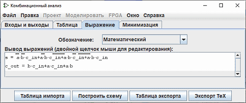
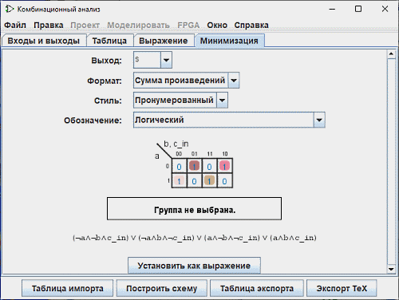
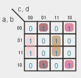
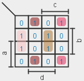

Проектирование и ввод логических выражений
Для каждой выходной переменной модуль Комбинационный анализ поддерживает два взаимосвязанных представления: столбец таблицы истинности и аналитическое логическое выражение, описывающее зависимость данного выхода от входных сигналов. Вы можете редактировать любое из этих представлений; изменение одного формата автоматически и мгновенно обновляет другой, обеспечивая строгую математическую согласованность.
Работа с логическими выражениями имеет первостепенное значение, поскольку именно на их основе алгоритмы Logisim-evolution осуществляют автоматический синтез принципиальной схемы.
Просмотр, редактирование и минимизация логических функций осуществляются на двух последних вкладках рабочего окна: Выражение и Минимизация.
Вкладка «Выражение»

Вкладка Выражение предоставляет интерфейс для анализа и ручной корректировки булевых функций, связанных с каждым выходом. Она содержит выпадающий список Обозначение: и перечень текущих логических выражений схемы.
Селектор Обозначение: (Notation) позволяет выбрать формат визуального отображения логических операторов. Доступны пять стандартов нотации:
- Математический (Mathematical):
- Горизонтальная черта над именем переменной (инверсия) обозначает логическое НЕ, символ ∙ — конъюнкцию (И), символ + — дизъюнкцию (ИЛИ), а ⊕ — строгую дизъюнкцию (Исключающее ИЛИ / XOR).
- Логический (Logical):
- Символ ¬ обозначает отрицание (НЕ), ∧ — конъюнкцию (И), ∨ — дизъюнкцию (ИЛИ), а ⊻ — Исключающее ИЛИ (XOR).
- Альтернативная логика (Alternate Logic):
- Символ ~ обозначает отрицание (НЕ), ∧ — конъюнкцию (И), ∨ — дизъюнкцию (ИЛИ), а ≢ — Исключающее ИЛИ (XOR).
- Логическое программирование (Boolean Programming):
- Синтаксис языков C/Java/C++. Символ ! обозначает логическое НЕ, && — логическое И, || — логическое ИЛИ, а != — логическое Исключающее ИЛИ (XOR).
- Побитовые операции (Bitwise Programming):
- Символ ~ обозначает побитовое НЕ, & — побитовое И, | — побитовое ИЛИ, а ^ — побитовое Исключающее ИЛИ (XOR).
В нижней части вкладки расположен текстовый редактор. В нём выбранное выражение всегда отображается в базовом текстовом ASCII-формате, где операция инверсии (НЕ) представляется символом тильды (~).
Чтобы приступить к редактированию, дважды щелкните левой кнопкой мыши по нужной строке в списке выражений. После внесения правок в текстовое поле нажмите клавишу Enter для их подтверждения — таблица истинности будет пересчитана автоматически. Кнопка Очистить полностью удаляет текст из поля ввода, а кнопка Сбросить отменяет несохранённые изменения и восстанавливает исходное выражение.
Важное предупреждение:Если вы внесёте изменения в текстовое поле, но переключитесь на другую вкладку (например, на «Таблицу») без предварительного нажатия Enter, ваши ручные правки выражения будут безвозвратно потеряны.
Синтаксис ввода выражений
При ручном вводе система распознаёт большинство стандартных логических операторов из языков C/Java, а также текстовые англоязычные мнемоники (AND, OR, NOT, XOR). Допускается комбинирование различных стилей нотации в одном выражении.
| Приоритет операции | Поддерживаемые символы ввода | Логическая функция |
|---|---|---|
| Высший приоритет | ~ ! ' | НЕ (NOT) |
| Высокий приоритет | (пробел / отсутствие символа) & && AND | И (AND) |
| Средний приоритет | ^ ⊕ XOR | Исключающее ИЛИ (XOR) |
| Низший приоритет | + | || OR | ИЛИ (OR) |
Ниже приведены примеры абсолютно равнозначных и синтаксически корректных выражений:
- a' (b + c)
- !a && (b || c)
- NOT a AND (b OR c)
Примечание: Избыточные круглые скобки внутри последовательностей однотипных операций (например, в цепочках элементов И, ИЛИ) не влияют на математический результат и будут автоматически оптимизированы компилятором Logisim при построении схемы.
Вкладка «Минимизация»

Вкладка Минимизация предоставляет мощный инструмент для визуального анализа и упрощения логических функций. Она включает панель селекторов, интерактивную карту Карно и итоговое минимизированное выражение.
Панель настройки минимизации
- Выход: — выбор целевой выходной переменной для проведения анализа.
- Формат: — выбор канонической формы синтеза: Сумма произведений (SOP / СДНФ) или Произведение сумм (POS / СКНФ).
-
Стиль: — настройка визуальной разметки входных переменных на осях карты Карно:
- Цифры — классическая разметка кода Грея нулями и единицами;
- Линии — зоны истинности переменных обозначаются краевыми линиями (скобками).

Стиль: Цифры

Стиль: Линии
Интерактивная карта Карно формируется под панелью селекторов. Вы можете изменять логические состояния непосредственно кликая по ячейкам карты — эти изменения синхронно отразятся в таблице истинности. Сгруппированные алгоритмом термы (импликанты), образующие минимальное покрытие функции, наглядно выделяются на карте в виде полупрозрачных цветных областей.
Под картой выводится итоговое сокращённое выражение. Для вычисления абсолютного минимума функции Logisim-evolution применяет строгий математический алгоритм Куайна — Мак-Класки (Quine-McCluskey). Этот метод гарантирует получение результата, полностью эквивалентного идеальной ручной минимизации по картам Карно, и эффективно работает с любым количеством входных переменных.
Кнопка Установить как выражение принудительно заменяет текущую функцию на её минимизированную форму на вкладке «Выражение». Как правило, система делает это автоматически, однако данная кнопка незаменима в случаях, когда вы ранее ввели неоптимизированное выражение вручную и теперь хотите применить к нему аппаратную минимизацию.
Далее: Создание схемы.